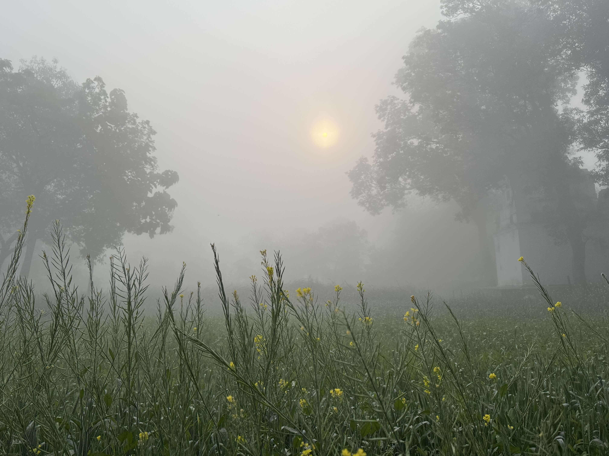
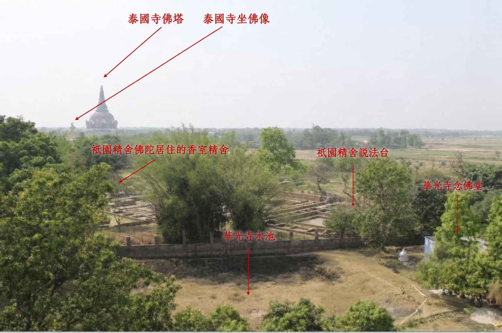
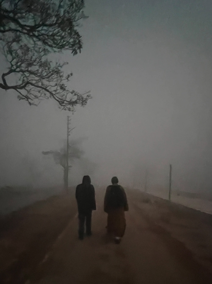
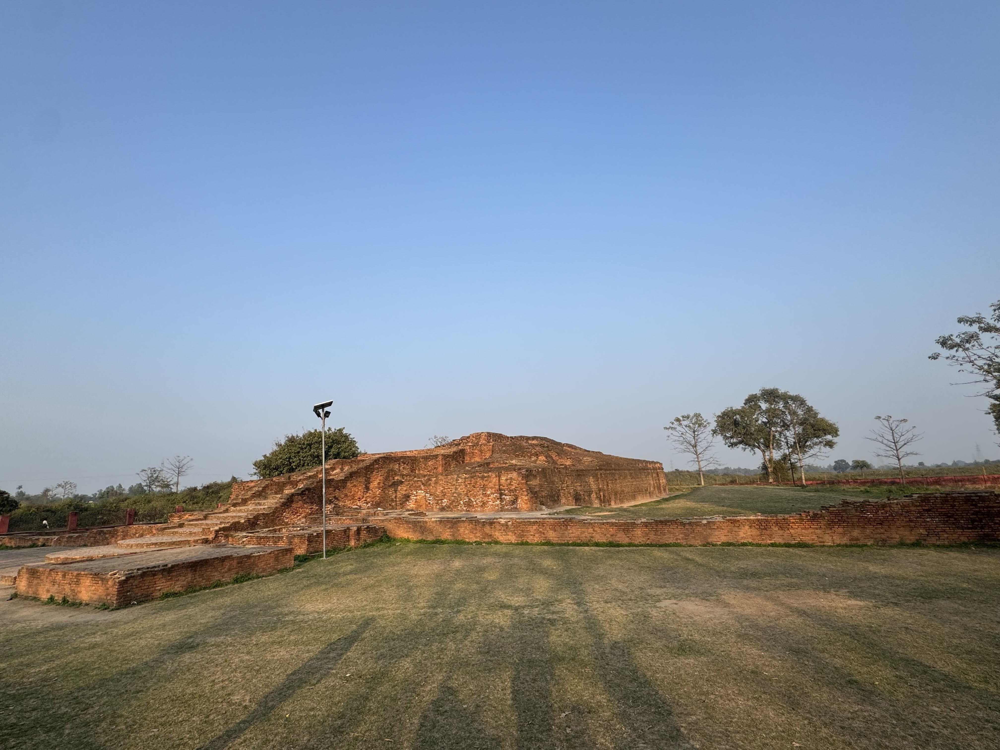
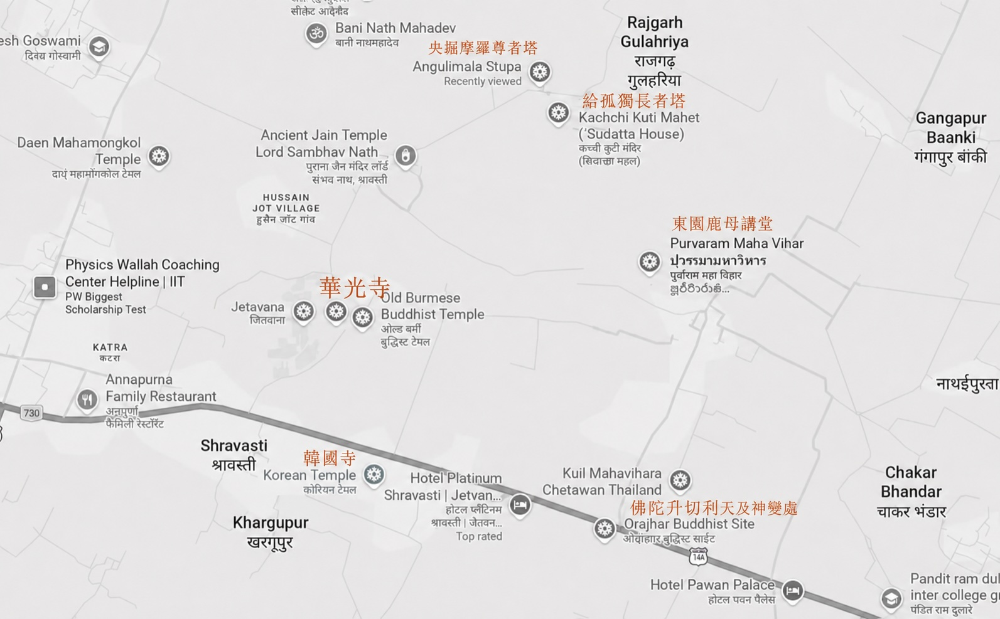
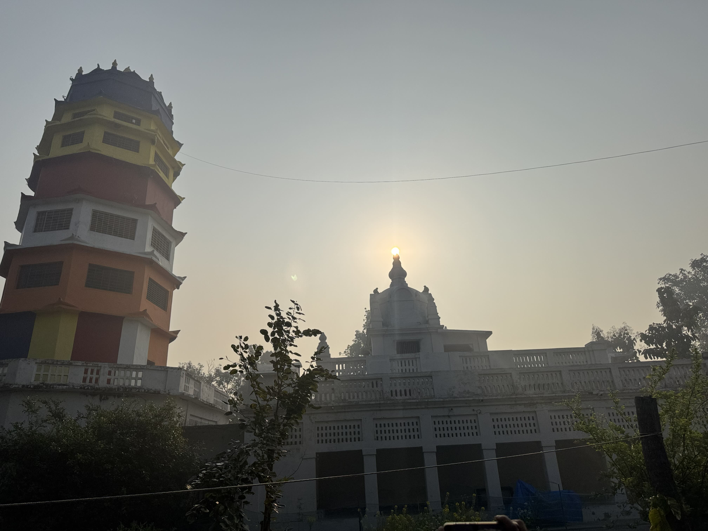

華光寺位於印度舍衛城，緊鄰祇樹給孤獨園，就在佛陀長年說法、僧團安住、每日入城托缽的聖地區域之中。
今日的華光寺，正於因緣中逐步整建、恢復功能。若要認識現在的華光寺，可以從三個面向來看：一是它所處的聖地環境，二是舍衛城周邊仍可見的各國佛教道場，三是華光寺正在進行的復興與整建。

華光寺位於印度舍衛城，緊鄰祇樹給孤獨園，就在佛陀長年說法、僧團安住、每日入城托缽的聖地區域之中。
今日的華光寺，正於因緣中逐步整建、恢復功能。若要認識現在的華光寺，可以從三個面向來看：一是它所處的聖地環境，二是舍衛城周邊仍可見的各國佛教道場，三是華光寺正在進行的復興與整建。
華光寺所在的位置，與祇樹給孤獨園相鄰。寺院外的道路，正連接著古代舍衛城的方向。相傳佛陀與僧團昔日常由此一帶入城托缽，行走於世間，也將佛法帶入人們日常生活之中。
從華光寺門外，沿著通往古代舍衛城方向的小徑前行，不久便可見道路兩側仍保存著大規模的古代遺址。其中一處，是一般標示為給孤獨長者故居、須達多長者塔。給孤獨長者本名須達多，是佛陀時代著名的大護法；祇樹給孤獨園的供養因緣，也正與他的深厚信心和布施願力相連。
道路另一側的大型遺構，也就是央掘摩羅尊者塔。央掘摩羅尊者由迷途而回轉，後來在佛陀教化下出家修行，其故事常被視為佛法轉化生命的重要象徵。
因此，來到華光寺，不只是參訪一座寺院，也可以在附近的道路與田野之間，感受佛陀與僧團當年安住、經行、入城托缽的生活氣息。從祇樹給孤獨園、華光寺，到給孤獨長者故居、央掘摩羅尊者塔與舍衛城古城遺址群，這一帶串連起的不只是地理上的朝聖路線，也是一段從佛陀說法、僧團生活，到在家護法與聖弟子轉化因緣的歷史記憶。



今日的舍衛城，不只有古代祇樹給孤獨園遺址，也可見多個國家的佛教團體在附近建立寺院、佛塔、禪修中心或接待空間。
在祇樹給孤獨園周邊，可見泰國、緬甸、韓國等佛教道場，以及其他與舍衛城佛教聖地相關的寺院設施。這些道場有的供僧眾安住，有的接待本國與各地朝聖者，有的舉行法會、禪修、供佛與佛教教育活動。對於遠道而來的信眾而言，這些寺院不只是旅途中短暫停留的地方，也是在佛陀聖地中重新親近佛法、安頓身心的重要處所。
華光寺位於這樣的聖地環境之中，也承載著漢傳佛教在舍衛城延續與復興的意義。當不同國家的僧團與信眾在此護持佛法、接引朝聖者，華光寺的重新整建復興，也期望讓漢傳佛教的修行、教育等弘化功能，在佛陀久住說法之地逐步恢復，成為朝聖者在這片聖地道場中一處清淨而安穩的依止。

華光寺位於祇樹給孤獨園附近的古蹟保護區內，因此整建工作不能以大規模外觀重建為方向，而是以現有建築與院區為基礎，逐步恢復寺院的基本功能與修行環境。
目前整建的重點，首先是讓道場能夠安全、莊嚴、穩定地使用。包括修復老舊地板、屋頂、漏水與電路，改善供電與供水，整理佛堂與衛生設施，使遠道而來的朝聖者能有禮佛、歇腳、共修與安住的空間。
接下來，也期望逐步完善住宿與經行空間，整理寺院景觀，使朝聖者來到祇樹給孤獨園旁時，能有一處可以安頓身心、禮佛經行的清淨空間。
更長遠來看，華光寺希望不只是一座在聖地被參觀的漢傳佛寺，而是一處能夠安住身心、弘揚漢傳禪法、服務朝聖者與在地社群的道場。期望在常住法師持續主持法務之下，逐步恢復禮佛、共修、禪修、接待、教育與慈善等功能，成為佛陀聖地旁一座清淨安穩、法務常續的漢傳佛教道場。

現在的華光寺，仍在修復與復興的過程中。它的可貴，不只在於位置緊鄰祇樹給孤獨園，也不只在於保存了漢傳佛教在舍衛城的歷史足跡；更重要的是，它正朝向一個能夠安住僧眾、接引朝聖者、推動修行與服務在地的方向前進。